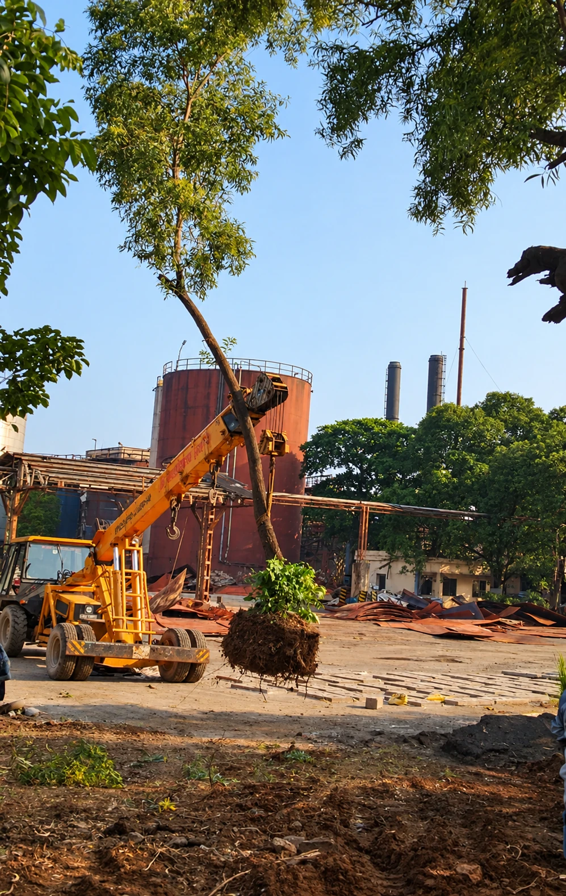
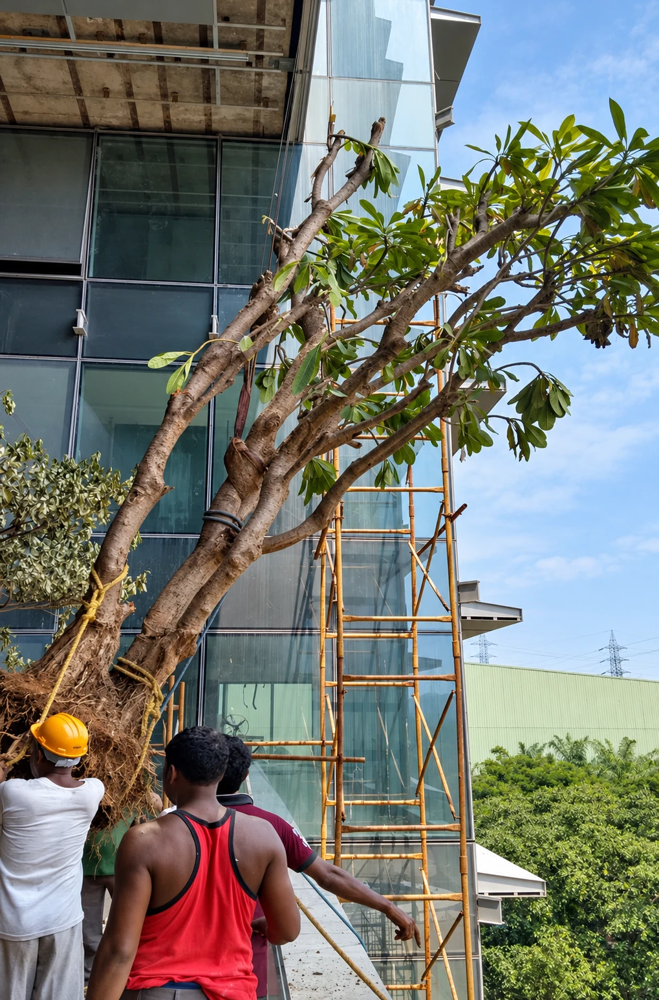
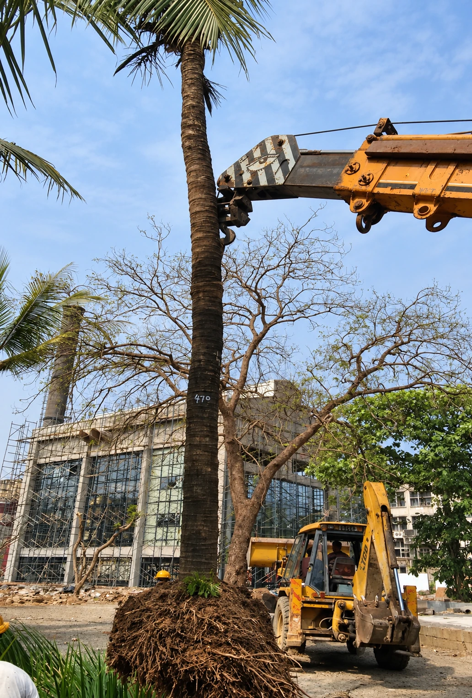
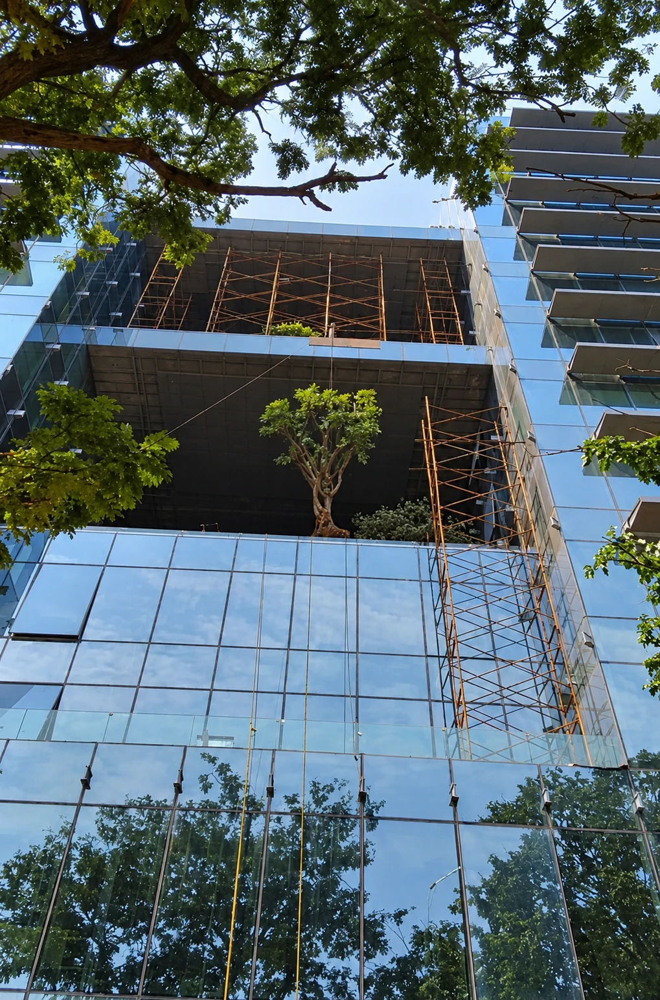

Tree
Transplantation
Relocating mature trees with planning, handling and aftercare.


2014Established, Mumbai
TREE TRANSPLANTATION
Protecting Trees Through Responsible Transplantation
Tree transplantation requires careful planning, handling and post-transplantation care. 7 Petals provides tree transplantation with attention to tree health, root systems, transportation, replantation and aftercare.
Our founder, Amit Walawalkar, has transplanted more than 1,000 trees. We have completed tree transplanting work for clients including Godrej Properties, Hub Town, Ajmera, Piramal and Godrej & Boyce, and act as consultants for tree transplanting on public infrastructure projects.
Our tree transplantation services
- Tree health assessment
- Site inspection & feasibility study
- Root ball preparation
- Safe tree excavation
- Relocation & transportation
- Replanting & stabilisation
- Soil improvement
- Irrigation planning
- Post-transplant monitoring
- Tree maintenance & aftercare
BENEFITS
Benefits of
tree transplantation
Preserves mature trees
Healthy trees keep growing in a new location instead of being cut.
Supports responsible development
Construction and infrastructure projects can proceed while protecting trees.
Saves years of growth
Mature trees give shade and environmental benefit that would take decades to grow.
Strengthens green infrastructure
Existing greenery is integrated into new developments.
PROCESS
Our transplantation
process
01
Tree assessment
Species, size, age, health and surroundings determine the method.
02
Site preparation
The new location is prepared with good soil, drainage and space for roots.
03
Root ball preparation
The root system is carefully prepared and protected to reduce stress.
04
Safe relocation
Using equipment and experienced crews, the tree is lifted, transported and replanted.
05
Post-transplant care
Watering, support, fertilisation, pruning and monitoring until the tree is established.
Projects we serve
We work with developers, contractors, consultants and architects.
- Residential developments
- Commercial buildings
- Industrial facilities
- Infrastructure & metro rail projects
- Roads & highways
- Educational institutions & hospitals
- Corporate campuses
- Public parks & government projects
PHOTO GALLERY
Tree Transplantation
in the Field



EXPLORE MORE
Other
Services


Plant Nursery & Plant Supply
Plants and plantation solutions for diverse landscape requirements.
Learn more